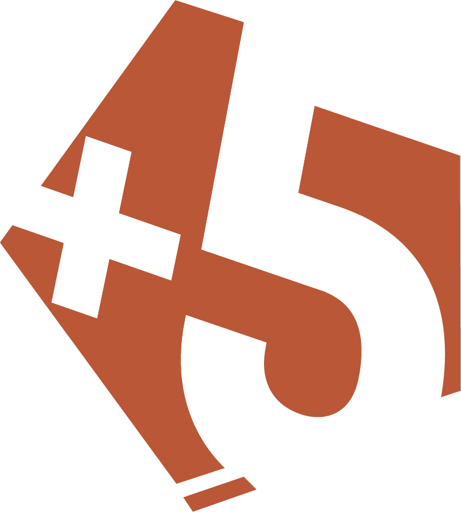
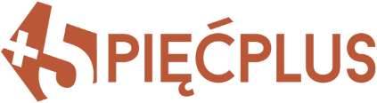

Nowy akcent zamiast cegły #B95737
Zmienia się tylko akcent (przyciski, linki, wyróżnienia, logo). Krem, granat i piaskowe złoto zostają. Na ciemnym tle akcent jest rozjaśniony, żeby był czytelny. Cegła: kontrast 4,5 na kremie i 3,3 na granacie, stąd „nieczytelny”.
Dziś: cegła
#B95737 na kremie 4.5:1#B95737 na granacie 3.3:1




A · Zieleń butelkowa
Najspokojniejsza, uczelniana (biblioteki Oxfordu). Najdalej od koloru Claude'a.#1E5B47 na kremie 7.7:1#7FD0AE na granacie 8.5:1
B · Szafir
Wszystko niebieskie i bardzo „instytucjonalne”; najbezpieczniejsza, ale najbardziej płaska.#1F4FA0 na kremie 7.6:1#8FB4F0 na granacie 7.4:1
C · Burgund
Harvard/Yale, ciepły jak cegła, ale wyraźnie ciemniejszy i chłodniejszy. Najwyższy kontrast.#7A2A3C na kremie 9.2:1#E8A3B3 na granacie 7.6:1
D · Morski (teal)
Najświeższy i najbardziej „nowoczesna edukacja”; mniej klasyczny.#0B6A6F na kremie 6.2:1#6FD6D6 na granacie 9.1:1